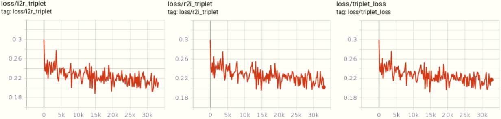
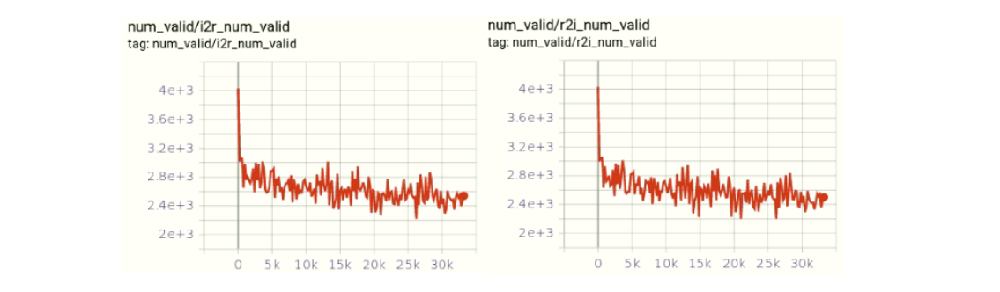
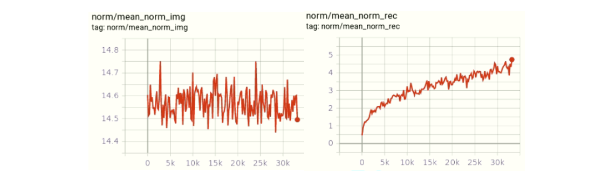

Triplet Loss
Triplet Loss的介紹，相信在網路上已經有許多例子了，用途跟作用這邊就不多作介紹，直接進入正題。
Triplet一開始是用來處理相同模態的資料，這邊測試用兩種模態的資料來算Triplet Loss，使用numpy來實現，後面會附上Tensorflow 2.x的代碼。
Sample Data
首先要先Sample出兩個不同的Embedding資料，直接使用numpy的random來產生兩個隨機的Embedding。
這邊設定Batch Size是64、每筆資料的維度為1024、Margin設定為0.3、另外Label這邊設定是每筆都是獨立的資料，所以每一筆資料對應一個label：
1 | import numpy as np |
2 | |
3 | batch = 64 |
4 | emb_dim = 1024 |
5 | |
6 | np.random.seed(1234) |
7 | emb1 = np.random.rand(batch,emb_dim).astype(np.float32) |
8 | np.random.seed(2345) |
9 | emb2 = np.random.rand(batch,emb_dim).astype(np.float32) |
10 | margin = 0.3 |
11 | labels = np.arange(batch) |
Batch All
針對一個batch所有的資料計算，anchor到positive跟anchor到negative之間的距離。
Distance Metric
這裡計算每一筆x對應到每一筆y的距離，回傳的是一個shape=(batch, batch)的metric：
1 | def _distance_metric(x, y): |
2 | """ |
3 | Args: |
4 | x: tensor, with shape [m, d], (batch_size, d) |
5 | y: tensor, with shape [n, d], (batch_size, d) |
6 | Returns: |
7 | dist: tensor, with shape [m, n], (batch_size, batch_size) |
8 | """ |
9 | # |x-y|^2 = x^2 - 2xy + y^2 |
10 | # xy |
11 | xy = np.matmul(x, np.transpose(y)) |
12 | # x^2 |
13 | xx = np.matmul(x, np.transpose(x)) |
14 | xx = np.diag(xx) |
15 | # y^2 |
16 | yy = np.matmul(y, np.transpose(y)) |
17 | yy = np.diag(yy) |
18 | ''' |
19 | (batch_size,1)-(batch_size,batch_size): |
20 | Equivalent to each column operation |
21 | (batch_size,batch_size)+(1,batch_size): |
22 | Equivalent to each row operation |
23 | ''' |
24 | distances = np.expand_dims(xx, 1) - 2.0*xy + np.expand_dims(yy, 0) |
25 | return distances |
Mask
這邊要注意Label需要使用shape=(batch_size,)的格式：
1 | def _label_mask(labels): |
2 | ''' |
3 | if label is same, label_mask will return True |
4 | ------------------------------------ |
5 | Args: |
6 | labels: Label Data, shape = (batch_size,1) |
7 | Returns: |
8 | label_mask: tensor, with shape [m, n], (batch_size, batch_size) |
9 | ex. |
10 | labels = [1,0,1] |
11 | label_mask = [[1, 0, 1], |
12 | [0, 1, 0], |
13 | [1, 0, 1]] |
14 | ''' |
15 | label_mask = np.equal(np.expand_dims(labels, 0), np.expand_dims(labels, 1)) |
16 | return label_mask |
Triplet Loss (batch_all)
這邊就是全部的流程，首先先算出兩個Embedding的dist_mat，再分別計算屬於anchor到positive的距離的mask和屬於anchor到negative的距離就可以分別得到dist_ap和dist_an，最後再計算dist_ap-dist_an+margin就得出triplet loss，具體計算過程如下：
1 | def batch_all(labels, emb1, emb2, margin): |
2 | ''' |
3 | batch all triplet loss of a batch |
4 | ------------------------------------ |
5 | Args: |
6 | labels: Label Data, shape = (batch_size,1) |
7 | emb1, emb2: Embedding Feature, shape = (batch_size, vector_size) |
8 | margin: margin, scalar |
9 | Returns: |
10 | triplet_loss: scalar, for one batch |
11 | ''' |
12 | dist_mat = _distance_metric(emb1, emb2) |
13 | # an and ap mask |
14 | ap_mask = _label_mask(labels) |
15 | an_mask = np.logical_not(ap_mask).astype(np.float32) |
16 | ap_mask = ap_mask.astype(np.float32) |
17 | # distance between anchor and positive |
18 | dist_ap = np.sum(dist_mat*ap_mask, axis=1)/np.sum(ap_mask, axis=1) |
19 | # ap - dist_mat + margin |
20 | mat = np.expand_dims(dist_ap, 1) - dist_mat + margin |
21 | # only need ap-an |
22 | mat = mat*an_mask |
23 | # caluculate the number of valid triplet loss |
24 | mask = np.greater(mat, 0.0).astype(np.float32) |
25 | num_valid_triplets = np.sum(mask) |
26 | triplet_loss = mat*mask |
27 | # <1 : 1 |
28 | num_valid_triplets = np.maximum(num_valid_triplets, 1.0) |
29 | # divided triplet_loss by num_valid_triplets |
30 | triplet_loss = np.sum(triplet_loss)/(num_valid_triplets + 1e-16) |
31 | return triplet_loss, num_valid_triplets |
Batch Hard
Batch Hard跟Batch All只差在算dist_ap時取最大的那一個，算dist_an找最小的那一個，另外也跟上面一樣計算num_valid_triplets，用來確認收斂程度：
1 | def batch_hard(labels, emb1, emb2, margin): |
2 | ''' |
3 | batch all triplet loss of a batch |
4 | ------------------------------------ |
5 | Args: |
6 | labels: Label Data, shape = (batch_size,1) |
7 | emb1, emb2: Embedding Feature, shape = (batch_size, vector_size) |
8 | margin: margin, scalar |
9 | Returns: |
10 | triplet_loss: scalar, for one batch |
11 | ''' |
12 | dist_mat = _distance_metric(emb1, emb2) |
13 | # an and ap mask |
14 | ap_mask = _label_mask(labels) |
15 | an_mask = np.logical_not(ap_mask).astype(np.float32) |
16 | ap_mask = ap_mask.astype(np.float32) |
17 | # distance between anchor and positive |
18 | dist_ap = np.sum(dist_mat*ap_mask, axis=1)/np.sum(ap_mask, axis=1) |
19 | # ap - dist_mat + margin |
20 | mat = np.expand_dims(dist_ap, 1) - dist_mat + margin |
21 | # only need ap-an |
22 | mat = mat*an_mask |
23 | # caluculate the number of valid triplet loss |
24 | mask = np.greater(mat, 0.0).astype(np.float32) |
25 | num_valid_triplets = np.sum(mask) |
26 | |
27 | # the max of distance between anchor and positive |
28 | hardest_dist_ap = np.max(dist_mat*ap_mask, axis=1) |
29 | # the max of distance between anchor and negative |
30 | max_num = np.max(dist_mat, axis=1) |
31 | hardest_dist_an = dist_mat*an_mask + ap_mask*max_num |
32 | hardest_dist_an = np.amin(hardest_dist_an, axis=1) |
33 | # ap - dist_mat + margin |
34 | mat = hardest_dist_ap - hardest_dist_an + margin |
35 | # <1 : 1 |
36 | triplet_loss = np.maximum(mat, 0.0) |
37 | triplet_loss = np.mean(triplet_loss) |
38 | return triplet_loss, num_valid_triplets |
Example
接下來針對triplet_loss還有num_valid_triplet在訓練過程中的變化，另外還會對emb1和emb2算各項的平方和再開根號。
triplet_loss
在訓練過程中triplet loss不會下降，因為這邊是計算valid triplet總和再除以需要計算的數量：

num_valid_triplet
這跟一般類神經網路的loss一樣，會越來越少：

mean_norm_embedding
因為類神經網路要區分開positive跟negative的例子，理論上會越來越大(如右圖)，不過我因為使用的image embedding是pretrain的，所以我先凍結image network 10個epoch，所以在圖表上他沒有太大的波幅：

Code Link
Tensorflow所有的code都是在Google Colab上面執行，版本為2.1.0。
Github：MachineLearning-01 Triplet Loss with Different Embedding